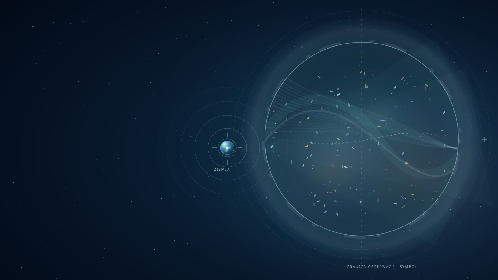

Wyprawa poza wszystkie mapy.
Zacznij od jednego metra. Potem zrób krok, który powiększa odległość dziesięciokrotnie. Jeszcze jeden. I jeszcze jeden. Po dwudziestu kilku takich krokach znane światy staną się niewidoczną drobiną. A to wciąż nie będzie koniec Wszechświata.
ZIEMIA · DZISIAJ
Najtrudniejsze w tej wyprawie jest wyobrażenie sobie dystansu.
Wyobraź sobie, że stoisz na Ziemi. Nie masz statku z napędem nadświetlnym, a jedynie sposób na zmienianie skali. Jeden ruch dłoni i odległość, którą oglądasz, zwiększa się dziesięć razy.
Przy 100 kilometrach trafiasz w okolice umownej granicy kosmosu, nazywanej linią Kármána. Przy 384 400 kilometrach pojawia się Księżyc. Kiedy porównujesz odległość Ziemia–Słońce, potrzebujesz już nowej jednostki: jednostki astronomicznej, równej dokładnie 149 597 870 700 metrom. Przy Proximie Centauri przestają wystarczać nawet miliony kilometrów. Zaczynają się lata świetlne. [1, 2]
Jeden rok świetlny jest odległością, a nie czasem: światło pokonuje ją w ciągu roku w próżni. Do najbliższej gwiazdy poza Słońcem jest około 4,24 roku świetlnego. Kiedy światło z Proximy dociera do Ziemi, widzimy tę gwiazdę taką, jaka była ponad cztery lata wcześniej.
Każdy pełny krok na naszej mapie to kolejny rząd wielkości. Nie dodajemy dziesięciu kilometrów. Mnożymy odległość przez dziesięć. Dzięki temu 1 m, 1 AU i miliony lat świetlnych mogą zmieścić się na jednej osi.
To zestawienie odległości i rozmiarów, nie astronomiczna mapa położeń. Nie wszystkie punkty oznaczają miejsce, do którego można polecieć wzdłuż jednej prostej.
Kosmos zmienia się wraz ze skalą patrzenia.
Cztery przejścia, po których trudno wrócić do dawnych wyobrażeń.
Neptun obiega Słońce około 30 razy dalej niż Ziemia. Ale nawet po opuszczeniu orbit planetarnych wciąż nie kończy się wpływ Słońca. Heliopauza nie jest granicą całego jego grawitacyjnego otoczenia.
1 AU → dziesiątki i setki AUPrzy odległości do Proximy Centauri pojedyncza gwiazda staje się tylko pierwszym punktem międzygwiezdnej podróży. Lata świetlne lepiej opisują tę pustkę niż kilometry.
4,24 roku świetlnegoDroga Mleczna ma średnicę rzędu 100 tysięcy lat świetlnych. Słońce jest jednym z ogromnej liczby jej gwiazd. Andromeda — kolejna wielka galaktyka — leży około 2,5 miliona lat świetlnych od nas.
Od tysięcy do milionów lat świetlnychGalaktyki skupiają się w grupach i gromadach, a te układają się we włókna i rozległe pustki. Wielkoskalowa struktura przypomina sieć, nie równomiernie rozsypane punkty.
Miliony i miliardy lat świetlnychW roku 2004 zobaczyliśmy, że ciemność bywa pełna galaktyk.
Astronomowie skierowali Kosmiczny Teleskop Hubble’a na bardzo mały fragment nieba. Po wielu godzinach zbierania słabego światła otrzymali obraz, który zmienił nasze wyobrażenie o odległym Wszechświecie.
 DANE Z TELESKOPU · NIE ILUSTRACJA
DANE Z TELESKOPU · NIE ILUSTRACJANiemal 10 000 galaktyk w skrawku nieba.
Na fotografiach złożonych z 800 ekspozycji wykonanych w latach 2003–2004 pojawiły się galaktyki w różnych epokach ich historii. Najodleglejsze widzimy jako młode, bo światło potrzebowało miliardów lat, aby dotrzeć do naszego teleskopu. [3]
Obserwacja: NASA, ESA, S. Beckwith (STScI) i HUDF Team. Kompozycja barwna z filtrów optycznych. Zobacz oryginalny opis NASA.Patrząc bardzo daleko, nie widzisz Wszechświata takim, jaki jest teraz. Widzisz jego przeszłość.
Jak coś może być oddalone o 46,5 miliarda lat świetlnych, skoro cały Wszechświat ma około 13,8 miliarda lat?
Pierwsza intuicja podpowiada: to niemożliwe. Gdyby światło leciało przez nieruchomą przestrzeń przez 13,8 miliarda lat, pokonałoby 13,8 miliarda lat świetlnych. Ale przestrzeń nie jest nieruchoma.
W trakcie podróży światła rosła sama przestrzeń.
Światło, które dziś do nas dociera z bardzo dalekich obszarów, zostało wyemitowane, gdy dzieląca nas przestrzeń była znacznie mniejsza. Podczas jego podróży ekspansja zwiększała odległości między niepowiązanymi grawitacyjnie obszarami.
Dlatego czas podróży światła i dzisiejsza odległość do obszaru, z którego zostało wysłane nie są tym samym. W standardowym opisie kosmologicznym promień obserwowalnego Wszechświata wynosi około 46 miliardów lat świetlnych. NASA podaje średnicę rzędu 92 miliardów lat świetlnych. [4, 5]
Co ważne: to nie oznacza, że galaktyka porusza się przez swoją lokalną przestrzeń szybciej od światła. Ekspansja kosmiczna i lokalny ruch obiektu są różnymi rzeczami.
Nasze teleskopy widzą niemal początek. Ale nie sam początek.
Przez pierwsze setki tysięcy lat po Wielkim Wybuchu materia była tak gorąca i gęsta, że światło nie mogło swobodnie pokonywać dużych dystansów. Dopiero gdy Wszechświat ochłodził się i stał przejrzysty, promieniowanie mogło podróżować niemal bez przeszkód.
Pozostałością tamtego momentu jest kosmiczne mikrofalowe promieniowanie tła (CMB) — najstarsze światło, które możemy badać bezpośrednio jako promieniowanie elektromagnetyczne. Pokazuje Wszechświat w wieku około 380 tysięcy lat. Misja ESA Planck stworzyła niezwykle dokładną mapę drobnych różnic jego temperatury. [5, 6]
Ta granica jest inna niż horyzont odległości. W tym przypadku przeszkodą jest nie odległość, ale dawna nieprzezroczystość młodego Wszechświata.
Wiek Wszechświata, który odczytujemy z kosmicznego mikrofalowego promieniowania tła.
ESA / Misja Planck ↗Przesuń jedną liczbę. Przenieś się między skalami.
W laboratorium możesz przeskakiwać między piętnastoma punktami orientacyjnymi, przesuwać logarytmiczną oś odległości i porównywać czasy pokonywania dystansów.
Jak daleko jest Księżyc?
Przejdź od 1 metra do odległości Ziemia–Księżyc. Odczytaj czas, którego światło potrzebuje na pokonanie tej drogi.
A gdyby lecieć do Proximy?
Porównaj hipotetyczny statek lecący 1% c z prędkością Voyagera 1. Wykres pokazuje tylko porównanie d/v, bez realnej dynamiki lotu.
Zanurz się w skali galaktyk
Znajdź Drogę Mleczną, Andromedę, Grupę Lokalną i Laniakeę. Zwróć uwagę, że porównujemy także rozmiary struktur, a nie wyłącznie odległości od Ziemi.
Dotrzyj do horyzontu
Wybierz „Wszechświat”. Sprawdź skalę 46,5 miliarda lat świetlnych, a następnie wyjaśnij, dlaczego czas d/c nie może tu oznaczać rzeczywistego czasu lotu fotonu.
Uwaga metodyczna: 15 punktów orientacyjnych miesza odległości do obiektów z rozmiarami struktur. Zawarte w laboratorium „czasy lotu” są prostym porównaniem d/v przy stałej prędkości, bez przyspieszania, grawitacji i ekspansji kosmicznej. W szczególności nie są prognozą podróży do horyzontu obserwowalności. Obrazy galaktyk i wielkiej sieci są ilustracyjne.